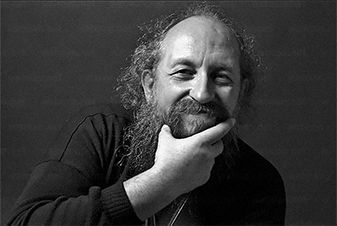

Получить навыки, нужные, чтобы зарабатывать в IT может быть долго и сложно….
непонятный «программистский» язык От которого у нормального человека просто пухнет голова
неясно, что именно читать и учит Чтобы не просто знать, но и получить реальную работу.
в Интернете полно теории Однако теория не ведет к деньгам, она просто отнимает твое время
легко сдаться и все бросить Без поддержки и источника мотивации
проще пойти раздавать листовки на улице, чем продолжать Если ты не видишь быстрого роста навыков и денежного «выхлопа» от изучения
[ Поэтому так много людей_ ]
Которые пытается получить IТ специальность — обламываются и бросают, а в обществе процветает мнение, что для хорошего заработка в этой сфере нужно быть математическим гением-задротом…

… однако
на самом деле
Так как Васерман выглядят только программисты, которые готовы жизнь положить на проекты типа «сделать новый Windows»…
Им действительно нужно быть гениями, днями и ночами ковыряться в бесконечном коде, забивать на себя, на отношения, даже иногда на гигиену.
Но если ты не хочешь
углубляться в дебри
программирования
А просто хочешь заниматься интересными проектами и хорошо при этом зарабатывать, и иметь время на личную жизнь…
Тогда сейчас перед тобой есть другой путь — стартовать карьеру в IT с позиции разработчика веб-приложений или сайтов.
YOU
Хочешь работать в комфортных условиях и крутым коллективом? Хочешь получать зарплату в 2-3 раза выше, чем средняя в твоем городе без необходимости переезжать?
Тогда Возможно, тебе тоже
[ пора начать зарабатывать в IT?_ ]
Если ты:
Устал бояться кризисов изменений власти и просто хочешь зарабатывать достойные деньги для себя и своей семьи, спокойно и с уверенностью смотреть в будущее
Задолбался впахивать как ломовая лошадь 250 дней в году чтобы на 1,5 недели съездить в Турцию с детьми, где они вымотают тебя окончательно
Хочешь наконец-то найти такой вариант заработка чтобы зарабатывать хорошие деньги и все еще иметь время на любимые «танки»
Устал приходить утром в нудный офис где все корчат дружелюбных, а на деле каждый мечтает тебя «подсидеть»
Хочешь наконец-то делать интересные задачи и зарабатывать на этом достойные деньги работать и зарабатывать
Тебя пилит жена за то, что ты играешь в игры а на самом деле тебя просто достала рутина на работе и ты хочешь расслабиться
Хочешь сменить статус с «офисного планктона» на «крутого IT-шника»
Учишься в институте и уже понимаешь что по специальности работать не будешь
… тогда пришло время стартовать карьеру в веб-разработке, чтобы осуществить свои желания и раскрыть потенциал!
[ Вот сухие факты_ ]
IT-отрасль — №1 в СНГ по выводу денег с фрилансерских бирж и по росту количества вакансий.
1-е [ Место ]
[ По аутсорсингу среди стран Восточной Европы ]
Количество вакансий для web-разработчиком в Украине постоянно растет (на 18% ежегодно).
20 [ тыс. ]
[ Новых рабочих мест в IT появляется ежегодно ]
3-й
[ По объему экспорта сектор экономики в Украине ]
$ 2000
[ Средняя зарплата специалиста отрасли ]
По данным крупнейшего ресурса фрилансеров Upwork: «Украинские разработчики в среднем получают от 20 до 30 $/час»
За IT сытое и стабильное будущее
Тебе не придется париться где взять работу/пенсию/доход.
Мир будущего в твоих руках. Если ты хочешь зарабатывать больше денег, быть уверенным в будущем и получить статус успешного человека — ты можешь получить это все, стартовав карьеру в IT как можно скорее!
[ при этом Кроме цифр_ ]
У web-разработчиков есть и другие преимущества, которые тебе понравятся...
работаешь в удобное время
— Обычно перед разработчиком ставят задачу и срок, а когда делать работу — решаешь ты;
можешь сам выбирать работодателя
— Ты можешь пойти работать в крупную компанию, или наоборот в молодой стартап;
огромная перспектива для роста и развития
С возможностью перейти на работу в международную компанию, переехать в другой город
получить статус успешного человека
Который сделал свою жизнь жизнью мечты, добился успеха, обеспечивает себя и свою семью
[ Смотри, как обычные люди ... ]
Которые даже в школе не изучали программирование, без гениальных навыков в математике, невероятных талантов природных способностей и блата сделали свой прорыв в IT!
Nina Miroshnychenko
Мені дуже сподобалися курси від GoIT (пройшла першу частину Frontend восени 2017р.)! Я випадково знайшла ці курси у Facebook. Пройшла пробний тест. Потім зі мною зв’язалися і пояснили всі деталі навчання. Мені було дуже цікаво, але все ж були й сумніви. Проте я пішла на курс і не пошкодувала ні разу! У мене був надзвичайний ментор — Alexander Repeta. Матеріалу було багато, вебінари були насичені, все зрозуміло пояснювали, жодне питання не залишилося без відповіді, завдання теж швидко перевіряв. Soft Skills викладав Антон Чорний, і теж було цікаво. Стільки всього нового, з цікавими прикладами. З організаційними та технічними питаннями проблем не було: були всі доступи і весь матеріал. Навчання було нелегким. Потрібно багато часу щоб розібрати матеріал, інколи і вебінари повторно проглядала. В результаті маю гарні знання та сертифікат ) Також команда GoIT допомогла мені знайти перше місце роботи — за це окремо дуже дякую! Тепер я знаю куди звертатися за знаннями ))) Я рада, що GoIT розширює напрямки курсів — це здорово і дуже потрібно! Дякую!!! Мені дуже сподобалися курси від GoIT (пройшла першу частину Frontend восени 2017р.)! Я випадково знайшла ці курси у Facebook. Пройшла пробний тест. Потім зі мною зв’язалися і пояснили всі деталі навчання. Мені було дуже цікаво, але все ж були й сумніви. Проте я пішла на курс і не пошкодувала ні разу! У мене був надзвичайний ментор — Alexander Repeta. Матеріалу було багато, вебінари були насичені, все зрозуміло пояснювали, жодне питання не залишилося без відповіді, завдання теж швидко перевіряв. Soft Skills викладав Антон Чорний, і теж було цікаво. Стільки всього нового, з цікавими прикладами. З організаційними та технічними питаннями проблем не було: були всі доступи і весь матеріал. Навчання було нелегким. Потрібно багато часу щоб розібрати матеріал, інколи і вебінари повторно проглядала. В результаті маю гарні знання та сертифікат ) Також команда GoIT допомогла мені знайти перше місце роботи — за це окремо дуже дякую! Тепер я знаю куди звертатися за знаннями ))) Я рада, що GoIT розширює напрямки курсів — це здорово і дуже потрібно! Дякую!!!
Ekaterina Illarionova
Отличные курсы для взрослых людей. У каждой группы есть менеджер который всегда поможет в организационных вопросах, несколько менторов к которым можно и нужно обращаться по учебным вопросам, есть возможность учавствовать в реальном проекте во время/после курса, есть возможность посещать speaking club для прокачки разговорного английского, а так же занятия «soft skills», после которых ты будешь понимать что такое Agile, Scrum, и прочие немаловажные вещи для современных IT компаний. Расчитывать на магию не стоит — какими бы хорошими курсы не были, обучение требует времени и энергии. Если ты не готов тратить свои ресурсы на достижение цели, потому что работа/друзья/варкрафт — то дела не будет. Но если готов стараться, GoIt станет отличным инструментом в начале твоего IT пути и непременно окупится сторицей. У меня было именно так. За время обучения, у меня не было проблем ни с коммуникацией, ни с учебным процессом в целом. Формат обучения для меня был довольно необычным, и по началу я к этому скептически отнеслась, но буквально через неделю втянулась и поняла на сколько этот формат подходит именно для меня! За относительно короткое время, я приобрела массу полезных знаний и навыков, бесценный опыт и познакомилась с замечательными людьми. Могу честно признаться, что все мои однокурсники, которые старательно и ответственно относились к своему обучению нашли работу после окончания курса (а некоторые и еще во время обучения)
Natalya Ivanova
Обдумуючи те, що відбулося зі мною за останній рік (я почала вчитися у вересні 2016-го), розумію, що курси Go Front End були переламним досвідом. Зараз спробую пояснити, і не очікуйте, що це буде якийсь «сліпий захват». Протягом трьох років перед тим я вивчала програмування та веб-розробку на різних онлайн-курсах. Успішно закінчила (з сертифікатами 95%+) більше десяти, і серед них були дуже круті — від MIT, Stanford, Rice... і навіть від Microsoft та від W3C. Абсолютно безцінна база і досвід навчання, за який я у вічному боргу перед винахідниками інтернету та ПК! Але. (Це для тих, хто любить повторювати, що ютуб повний безкоштовних тьюторіалів, і т.п.). Але, прийшовши на курси GoIT із фронтенду, де було хай навіть не 50/50 офлайну, хай навіть менше (насправді складно порахувати), я відчула, як по мені пройшовся танк. Як отримані десь «у віртуалі» знання тепер треба випробовувати реальним досвідом, показувати свої роботи живим людям, заповнювати лакуни, доводити релевантність своїх навичок на сеансах «живого коду» чи хакатонах, вислуховувати «ай-ай-ай» від ментора, захищати чи корегувати свою думку, розв’язуючи кейси «домашок» (хто як, а я досі запускаю у браузері деякі свої роботи по JS — вони мені служать як простенькі, але практичні десктопні програмки). Не встигла я прийти до тями після шоку з початком навчання, як з нетрів інету визирнув Антон — викладач модулю Soft Skills (тоді він був просто викладачем, а тепер... о-го-го, хто він)). Уже після першого вебінару стало зрозуміло, що ця людина по-справжньому закохана у свій предмет і дуже хоче поділитися всім, що знає. А ще — має безліч живих ідей та ентузіазм їх утілювати. Не минуло, здається, й місяця, як ми, курс GoFE6, отримали цьому нове підтвердження: вступивши у творчу змову з нашим ментором Марком, Антон запропонував нам розділитися на команди і зробити власні проекти, використовуючи знання з фронтенду, а також технологію скраму. Так ми стали першопрохідцями проектного навчання в GoIT :) Це було дуже складно, з безліччю підводних каменів, про які ніхто не здогадувався на старті. Але досвіду, самовідданості та фаховості цих двох людей — Марка й Антона — вистачило на всіх нас. А ви знаєте, що таке проекти? Це саме те, що ви будете показувати роботодавцям, не маючи і місяця так званої «справжньої» роботи (проблема більшості новачків в ІТ). Проекти — це те, що роботодавця зацікавить. Бо воно — унікальне, ваше, робоче, «живе»... Що тут казати. Завдяки своєму проекту (де я стала також тімлідом, теж нічого-собі досвід) вже за місяць після випуску з курсів я втрапила на першу роботу — у стартапі, який хлопці вирішили розробляти на Angular 2 — опа, сюрприз..., а далі... А далі це вже сніговий ком. Тепер у мене шість проектів (три з них так чи інакше пов’язані з GoIT) та новий оффер. Ну, а вже потім, на наступних потоках, з’явився React, Redux, WebSockets і те, про що хлопці-дівчата вже нижче у своїх історіях-відгуках писали... І взагалі, я бачу, куди GoIT рухається, куди розвивається за буквально останні місяці, і це дуже круто: люди роблять висновки, горять ентузіазмом до якісних змін, прислухаються до актуальних трендів і не бояться ламати стереотипи. Молодці, всім би так! Особливо скигликам ))
4
Stap
[ 4 простых шага чтобы начать_ ]
Делать сайты, за которые тебе будут готовы платить хорошие деньги
01.
Установить программы
Нужные для создания сайтов (они установятся даже на обычном офисном компьютере)
02.
Разобраться в терминах WEB-разработки
03.
Знать как делать все элементы сайта
04.
Уметь это все подключить
Чтобы сайт полноценно работал
… и это все, что нужно, чтобы устроиться на работу web-разработчиком!
[ Плюс получибонусы_ ]
Которые помогут тебе быстрее стартовать карьеру разработчика:
PDF «Карта профессий в IT»
Чтобы видеть, куда дальше двигаться и какие перспективы тебя ожидают — ценность 215 грн
PDF «Переводчик с IT-языка на человеческий»
Чтобы ты смог быстро стать своим в «тусовке» — ценность 320 грн
[ Важно! ]
[ Ценность видео-курса и бонусов ]
1835 грн
[ Цена Сегодня ]
399 грн.
[ Важно! ]
Эта цена — наш подарок для первых 150 человек, решивших улучшить жизнь свою и своих семей через IT
Ведь наша цель — создать бренд Украины как сильной IT страны!
Однако как только первые 150 «копий» курса разойдется — цена поднимется.
GO
[ Действуй — регистрируйся, оплачивай_ ]
И получи доступ к твоему видео-курсу уже сегодня!
P. S. :
Да, сейчас ты можешь закрыть эту страницу… Подумать, “это не для меня”, “я слишком стар”, “я слишком молод”, “как-то в другой раз, не сейчас”. И… почти ничего не измениться.
Останется ненавистная работа, денег все так же не будет хватать. Добавится больше ескуки, разочарования, усталости…
Или ты можешь сейчас зарегистрироваться на видео-курс и открыть для себя новый путь в классную профессию, интересную жизнь, путь к большим деньгам и статусу.